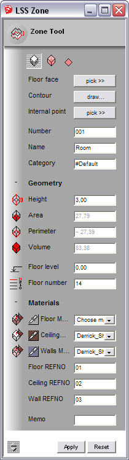
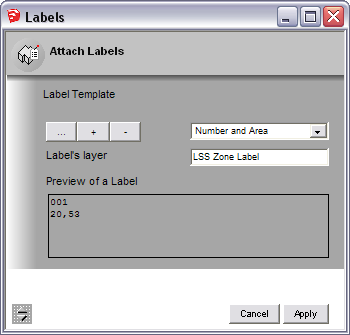
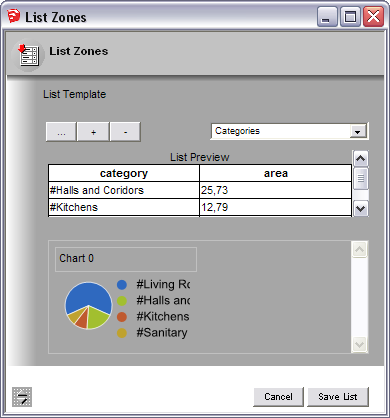

|
'LSS Zone' Help System
|
|
Browse more information on-line>>
|
|
 Zone Tool
Zone Tool

- open tool dialog
- draw contour of a zone or pick floor face
- adjust zone's settings (number, name, category, height etc)
- apply settings to generate zone object
Advanced operations:
select existing zone while tool is active, then
- reshape its contour
- change its height interactively
- re-adjust its settings
- cut openings
Learn more...
- select zone objects
- open tool dialog
- adjust check distance between openings
- launch linking process
Advanced operations:
when links graph is finished it is possible
- to move its nodes
- to build links graph in an active model
Learn more...

- select zone objects
- open tool dialog
- select existing label template from a drop-down list
- set appropriate layer for labels
- attach labels
It is also possible to edit label template or create a new one.
Learn more...
 List Zones
List Zones

- select zone objects
- open tool dialog
- select existing report template from a drop-down list
- save generated list into a file
It is also possible to edit list template or create a new one.
Learn more...
 View/Edit Properties
View/Edit Properties Filter Zones
Filter Zones